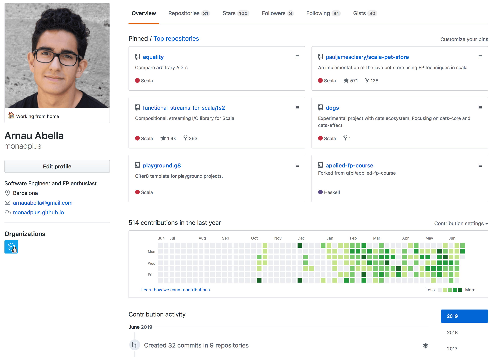
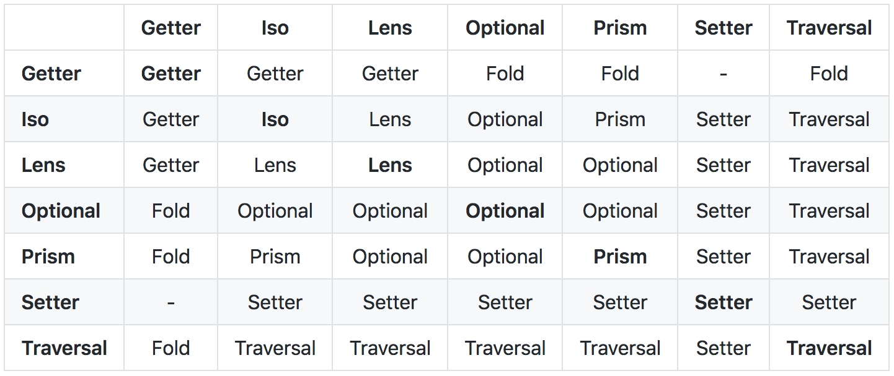
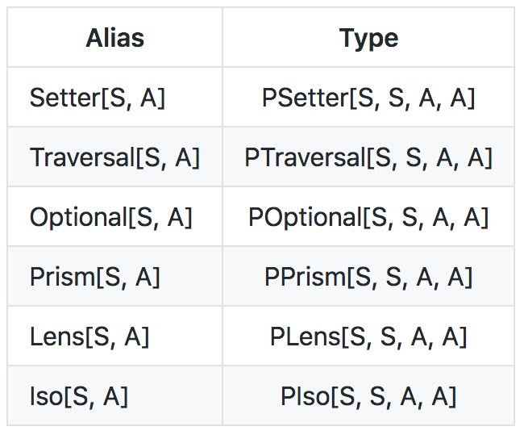

The magic of composition
Diving into van Laarhoven optics
Arnau Abella - Software Engineer @ Agilogy
May 3th, 2019 | Barcelona, Spain
Sources: here
About me

More information here
Lenses hierarchy


Composition
The result is their lowest upper bound in the hierarchy (or an error if that bound doesn't exist).

Fold
Getter
Setter
Break
Let's talk about composition
Traversal
Optional
Lens
Prism
Iso
Aliases
Lens are polymorphic!
At
Each
Field1 .. Field6
Index / IndexFilter
Plated
Conclusion
Lenses are not magic!
Lenses provide a rich and composable abstraction to manipulate functional data structures in an imperative way
Monocle is a wonderful library.
Give it a try !
For the brave ones, dive into lenses and master 'em all!
Acknowledgements
This talk wouldn't be possible without countless hours of work of:
Kudos to Jakub Kozłowski for helping me with the slides.
Questions ?
- Reach me out on Gitter @monadplus!